🔭 搜寻行星 X
The Search for Planet X · 设计：Ben Kanelos · Renegade Game Studios 出版 · 1–4 人 · 官方英文规则书全文翻译（20 页 · AI 辅助机翻）
本页收录《搜寻行星 X》（The Search for Planet X, 2020）的原版官方规则书全部 20 页（底本：Renegade Game Studios 官方（1jour-1jeu 镜像），79-the-search-for-planet-x-rulebook.pdf），逐页随图排列，点击任意图片即可放大查看；每页下方默认折叠了该页的 AI 辅助中文机翻对照，需要时可展开。规则内容归 Renegade Game Studios 及版权方所有，收录仅供个人学习查阅。
整理说明：机翻对照按本站术语口径对齐（牌库/手牌/回合/轮/板块/指示物等），PDF 图文混排页的语序可能与原书视觉顺序略有出入；规则细节请一律以页面上方原书页面为准。
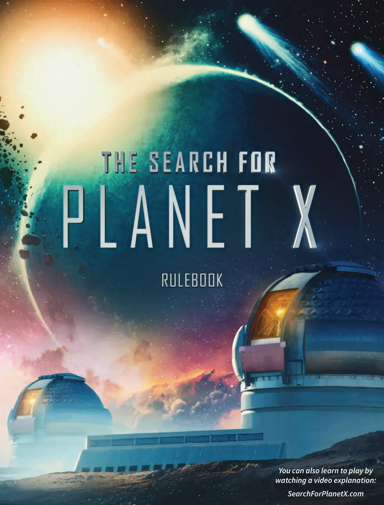
📝 第 1 页 AI 机翻对照（点击展开）
你也可以通过观看视频解说来学习游戏：
SearchForPlanetX.com
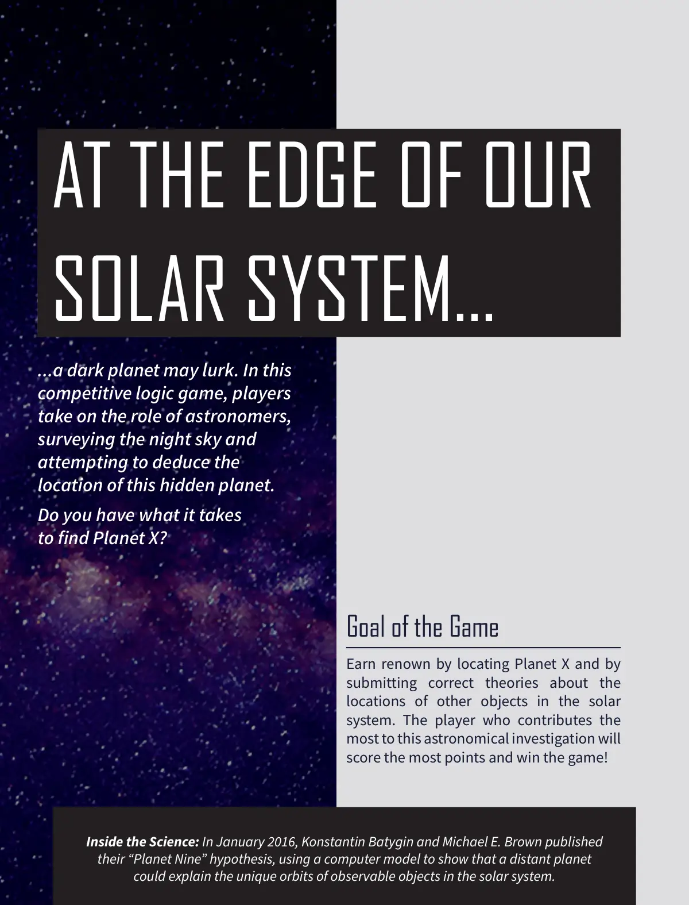
📝 第 2 页 AI 机翻对照（点击展开）
游戏目标
通过定位行星X以及提交关于太阳系中其他物体位置的正确理论来获得声望。为这项天文学调查做出最大贡献的玩家将获得最高分数并赢得游戏！
在我们太阳系的边缘...
...可能潜伏着一颗黑暗的行星。在这款竞争性逻辑游戏中，玩家扮演天文学家，观测夜空并试图推断出这颗隐藏行星的位置。
你有能力找到行星X吗？
科学背景：2016年1月，康斯坦丁·巴京（Konstantin Batygin）和迈克尔·E·布朗（Michael E. Brown）发表了他们的"行星九"假说，使用计算机模型表明一颗遥远的行星可以解释太阳系中可观测物体的独特轨道。
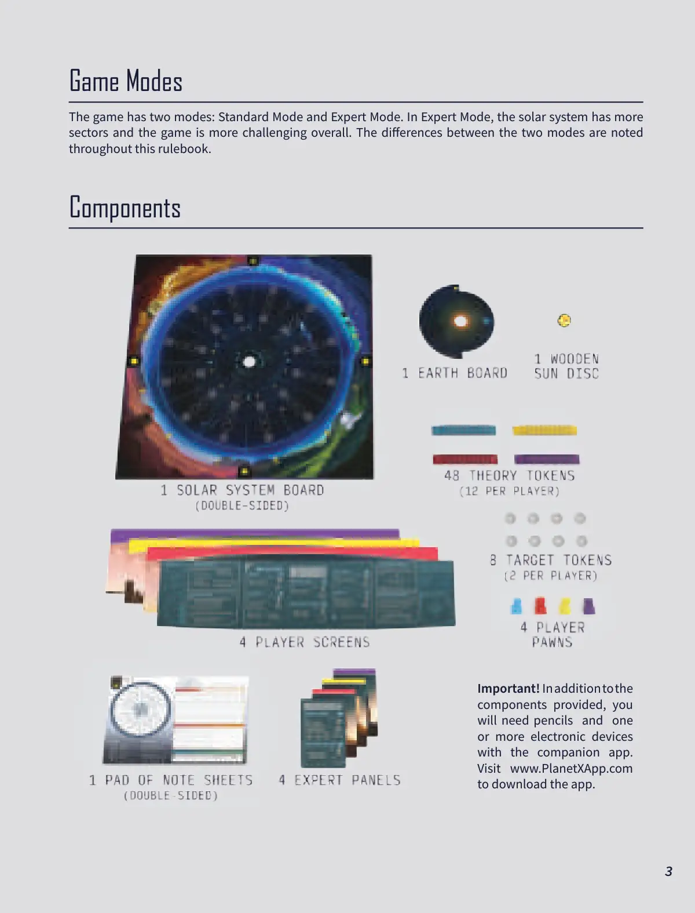
📝 第 3 页 AI 机翻对照（点击展开）
游戏模式
游戏有两种模式：标准模式和专家模式。在专家模式中，太阳系有更多的区域，整体游戏更具挑战性。两种模式之间的差异在本规则书中均有注明。
组件
重要！除了提供的组件外，
你还需要铅笔和一台或多台
安装了配套应用程序的电子设备。
访问 www.PlanetXApp.com
下载应用程序。
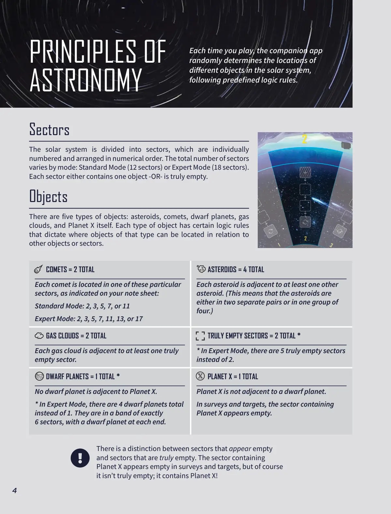
📝 第 4 页 AI 机翻对照（点击展开）
每次游戏时，伴随机应用会根据预定义的逻辑规则
随机确定太阳系中不同物体的位置。
天文学
原理
区域
太阳系被划分为多个区域，这些区域单独编号并按数字顺序排列。区域总数因模式而异：标准模式（12个区域）或专家模式（18个区域）。每个区域要么包含一个物体，要么是完全空的。
物体
有五种类型的物体：小行星、彗星、矮行星、气体云和行星X本身。每种类型的物体都有特定的逻辑规则，规定了该类型物体相对于其他物体或区域可以位于何处。
看似空白的区域和真正空白的区域是有区别的。包含行星X的区域在探测和目标中显示为空白，但当然它不是真正空的；它包含行星X！
彗星 = 共2个
每个彗星位于您记录表上标明的特定区域之一：
标准模式：2、3、5、7或11
专家模式：2、3、5、7、11、13或17
小行星 = 共4个
每个小行星至少与另一个小行星相邻。（这意味着小行星要么在两个分开的对中，要么在一个由四个组成的小组中。）
气体云 = 共2个
每个气体云至少与一个真正空白的区域相邻。
真空白区域 = 共2个 *
- 在专家模式中，有5个真正空白的区域，而不是2个。
矮行星 = 共1个 *
没有矮行星与行星X相邻。
- 在专家模式中，共有4个矮行星，而不是1个。它们位于一个恰好6个区域的带状区域中，两端各有一个矮行星。
行星X = 共1个
行星X不与矮行星相邻。
在探测和目标中，包含行星X的区域显示为空白。
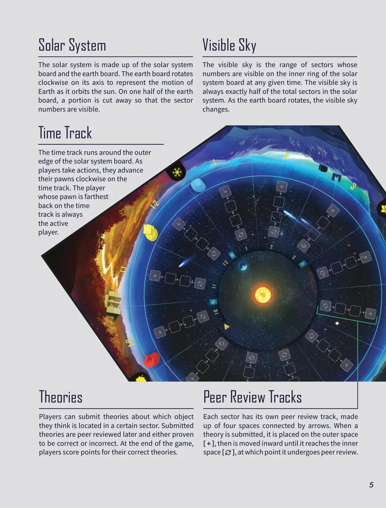
📝 第 5 页 AI 机翻对照（点击展开）
太阳系
太阳系由太阳系版图和地球版图组成。地球版图绕其轴顺时针旋转，以代表地球绕太阳公转的运动。在地球版图的一半上，有一部分被切掉，以便扇区编号可见。
可见天空
可见天空是指在太阳系版图内环上任意时刻编号可见的扇区范围。可见天空总是太阳系总扇区数的一半。随着地球版图的旋转，可见天空也会随之变化。
时间轨道
时间轨道环绕太阳系版图的外边缘运行。当玩家执行行动时，他们将棋子在时间轨道上顺时针前进。在时间轨道上位置最靠后的玩家始终是当前玩家。
理论
玩家可以提交关于他们认为某个物体位于特定扇区的理论。提交的理论将在之后进行同行评审，并被证明是正确或错误的。在游戏结束时，玩家会因正确的理论而获得分数。
同行评审轨道
每个扇区都有自己的同行评审轨道，由四个通过箭头连接的格子组成。当提交一个理论时，它被放置在外部格子[+]，然后向内移动，直到到达内部格子[]，此时它将进行同行评审。
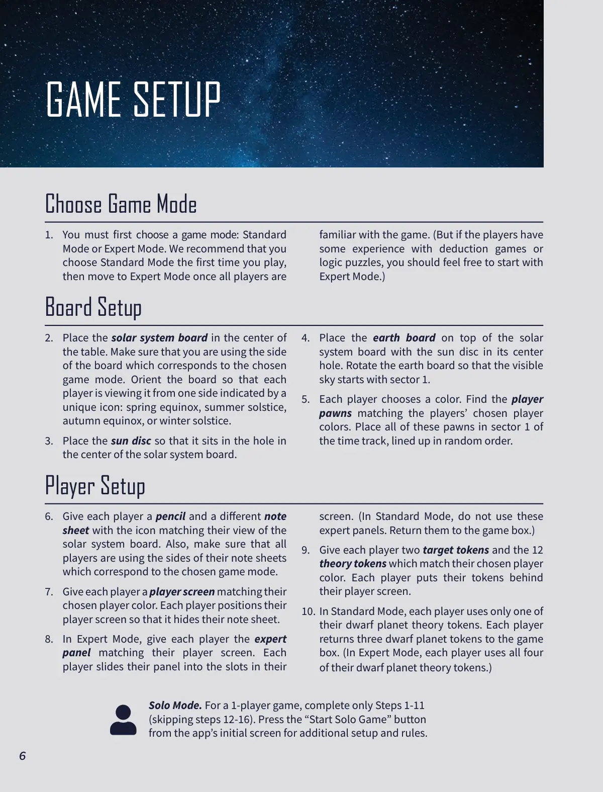
📝 第 6 页 AI 机翻对照（点击展开）
游戏设置
选择游戏模式
1. 你必须首先选择一种游戏模式：标准模式或专家模式。我们建议你第一次游戏时选择标准模式，然后当所有玩家都熟悉游戏后再进入专家模式。（但如果玩家有解谜游戏或逻辑谜题的经验，你应该可以直接从专家模式开始。）
版图设置
2. 将太阳系版图放在桌子中央。确保你使用的是与所选游戏模式相对应的版图面。调整版图方向，使每位玩家都能从由独特图标标记的一侧查看版图：春分、夏至、秋分或冬至。
3. 将太阳圆盘放置在太阳系版图中央的孔洞中。
4. 将地球版图放在太阳系版图上，太阳圆盘位于其中心孔洞中。旋转地球版图，使可见天空从区域1开始。
- 每位玩家选择一种颜色。找到与玩家所选玩家颜色相匹配的玩家棋子。将所有这些棋子放在时间轴的区域1中，以随机顺序排成一列。
玩家设置
6. 给每位玩家一支铅笔和一张带有与他们查看太阳系版图视角相匹配图标的不同的记录表。同时，确保所有玩家使用的是与他们所选游戏模式相对应的记录表面。
7. 给每位玩家一张与他们所选玩家颜色相匹配的玩家屏幕。每位玩家将他们的玩家屏幕定位，使其隐藏他们的记录表。
8. 在专家模式中，给每位玩家与他们玩家屏幕相匹配的专家面板。每位玩家将他们的面板滑入屏幕的插槽中。（在标准模式中，不要使用这些专家面板。将它们放回游戏盒中。）
9. 给每位玩家两个目标标记和与他们所选玩家颜色相匹配的12个理论标记。每位玩家将他们的标记放在他们的玩家屏幕后面。
10. 在标准模式中，每位玩家只使用他们矮行星理论标记中的一个。每位玩家将三个矮行星标记放回游戏盒中。（在专家模式中，每位玩家使用他们所有的四个矮行星理论标记。）
单人模式。对于1人游戏，只完成步骤1-11（跳过步骤12-16）。从应用的初始屏幕按下"开始单人游戏"按钮进行额外设置和规则说明。
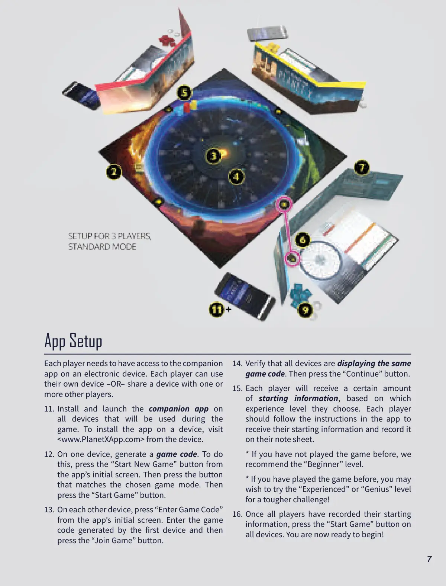
📝 第 7 页 AI 机翻对照（点击展开）
应用设置
每位玩家需要能够在一台电子设备上访问配套应用。每位玩家可以使用自己的设备——或者与其他一位或多位玩家共享一台设备。
11. 在所有将在游戏中使用的设备上安装并启动配套应用。要在设备上安装应用，请从该设备访问 <www.PlanetXApp.com>。
- 在一台设备上生成游戏代码。为此，从应用的初始屏幕按下"开始新游戏"按钮。然后按下与所选游戏模式相匹配的按钮。然后按下"开始游戏"按钮。
- 在其他每台设备上，从应用的初始屏幕按下"输入游戏代码"。输入第一台设备生成的游戏代码，然后按下"加入游戏"按钮。
14. 验证所有设备是否显示相同的游戏代码。然后按下"继续"按钮。
15. 每位玩家将根据他们选择的经验等级获得一定数量的起始信息。每位玩家应遵循应用中的指示来获取他们的起始信息并将其记录在他们的记录表上。
- 如果你之前没有玩过这款游戏，我们推荐"新手"级别。
- 如果你之前玩过这款游戏，你可能想要尝试"熟练"或"天才"级别以获得更具挑战性的体验！
16. 一旦所有玩家都记录了他们的起始信息，在所有设备上按下"开始游戏"按钮。现在你们可以开始游戏了！
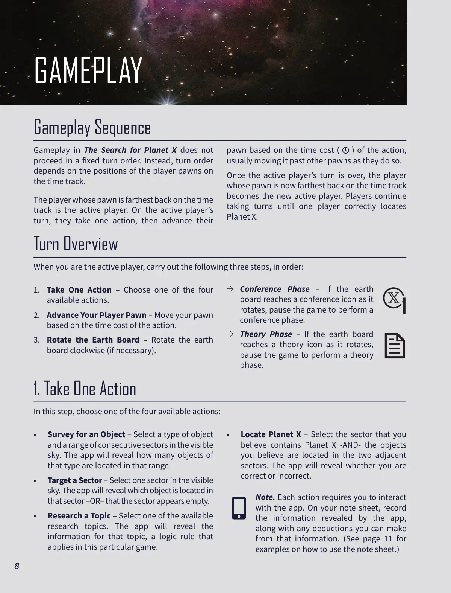
📝 第 8 页 AI 机翻对照（点击展开）
游戏玩法
游戏流程
《寻找行星X》的游戏玩法并非按照固定的回合顺序进行。相反，回合顺序取决于玩家棋子在时间轨道上的位置。
棋子在时间轨道上位置最靠后的玩家是当前玩家。在当前玩家的回合中，他们执行一个行动，然后根据行动的时间成本（）前进他们的棋子，通常会超过其他棋子。
一旦当前玩家的回合结束，棋子在时间轨道上位置现在最靠后的玩家成为新的当前玩家。玩家继续轮流行动，直到有玩家正确找到行星X。
回合概述
当你成为当前玩家时，按顺序执行以下三个步骤：
- 执行一个行动 – 从四个可用行动中选择一个。
- 前进你的玩家棋子 – 根据行动的时间成本移动你的棋子。
- 旋转地球版图 – 顺时针旋转地球版图（如有必要）。
会议阶段 – 如果地球版图在旋转时到达会议图标，暂停游戏以执行会议阶段。
理论阶段 – 如果地球版图在旋转时到达理论图标，暂停游戏以执行理论阶段。
1. 执行一个行动
在此步骤中，从四个可用行动中选择一个：
• 对天体进行观测 – 选择一种天体类型和可见天空中的一组连续扇区。应用将揭示该类型的天体在该范围内有多少个。
• 瞄准一个扇区 – 选择可见天空中的一个扇区。应用将揭示该扇区中位于哪个天体上——或者——该扇区显示为空。
• 研究一个主题 – 从可用的研究主题中选择一个。应用将揭示该主题的信息，即适用于本特定游戏的逻辑规则。
• 定位行星X – 选择你认为包含行星X的扇区——以及你认为位于两个相邻扇区中的天体。应用将揭示你是否正确。
注意。每个行动都需要你与应用互动。在你的记录表上，记录应用揭示的信息，以及你能从该信息中得出的任何推论。（关于如何使用记录表的示例，请参见第11页。）
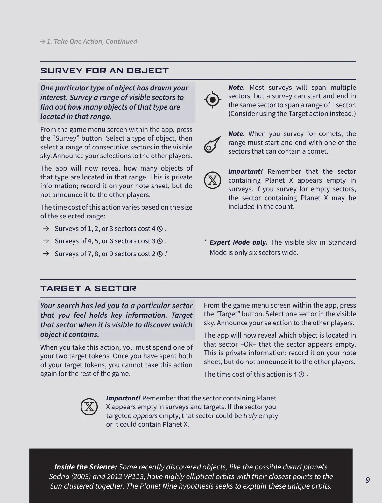
📝 第 9 页 AI 机翻对照（点击展开）
1. 执行一个行动，续
探测一个天体
某一特定类型的天体引起了你的兴趣。探测一系列可见的扇区，找出该类型的天体在该范围内有多少个。
从应用内的游戏菜单屏幕，按下"探测"按钮。选择一种天体类型，然后选择可见天空中一系列连续的扇区。向其他玩家宣布你的选择。
应用现在将揭示该类型的天体在该范围内有多少个。这是私人信息；在你的记录表上记录它，但不要向其他玩家宣布。
此行动的时间成本根据所选范围的大小而变化：
探测1、2或3个扇区的成本为4 。
探测4、5或6个扇区的成本为3 。
探测7、8或9个扇区的成本为2 。*
注意。大多数探测将跨越多个扇区，但探测可以从同一个扇区开始和结束，以跨越1个扇区的范围。（考虑使用目标行动代替。）
注意。当你探测彗星时，范围必须以可以包含彗星的扇区之一开始和结束。
重要！记住，在探测中包含行星X的扇区显示为空。如果你探测空扇区，包含行星X的扇区可能被计入数量。
- 仅专家模式。标准模式的可见天空只有六个扇区宽。
锁定一个扇区
你的搜索引导你锁定了一个你认为包含关键信息的特定扇区。当该扇区可见时锁定它，以发现其中包含什么天体。
当你执行此行动时，你必须花费你的两个目标指示物中的一个。一旦你花费了两个目标指示物，在游戏的剩余时间内你不能再次执行此行动。
从应用内的游戏菜单屏幕，按下"目标"按钮。选择可见天空中的一个扇区。向其他玩家宣布你的选择。
应用现在将揭示该扇区包含什么天体——或者——该扇区显示为空。这是私人信息；在你的记录表上记录它，但不要向其他玩家宣布。
此行动的时间成本是4 。
重要！记住，在探测和目标行动中包含行星X的扇区显示为空。如果你锁定的扇区显示为空，该扇区可能是真正空的，或者可能包含行星X。
科学内幕：一些最近发现的天体，如可能存在的矮行星塞德娜(2003)和2012 VP113，具有高度椭圆的轨道，它们与太阳最近的点聚集在一起。行星九假说试图解释这些独特的轨道。
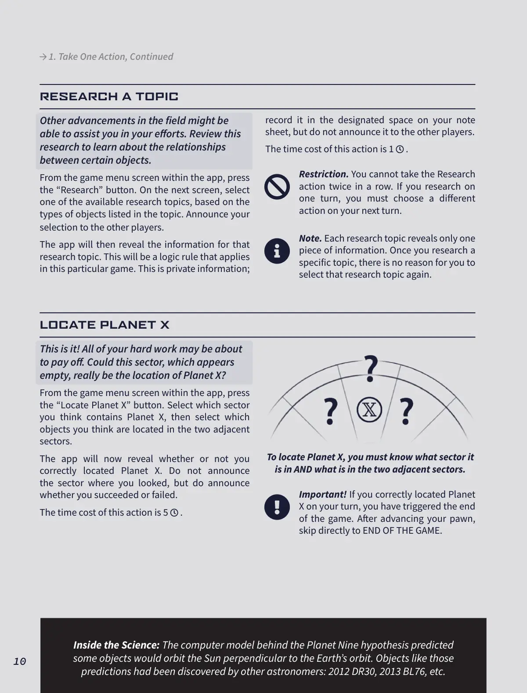
📝 第 10 页 AI 机翻对照（点击展开）
1. 执行一个行动，续
研究一个主题
该领域的其他进展或许能够协助你的努力。查阅这些研究以了解某些物体之间的关系。
从应用内的游戏菜单屏幕，按下"研究"按钮。在下一个屏幕上，根据主题中列出的物体类型，选择一个可用的研究主题。向其他玩家宣布你的选择。
然后应用将揭示该研究主题的信息。这将是一个适用于本次特定游戏的逻辑规则。这是私密信息；请将其记录在你的记分表指定区域，但不要向其他玩家宣布。
此行动的时间成本为 1 。
限制。你不能连续两次执行研究行动。如果你在一回合内进行了研究，你必须在下一回合选择不同的行动。
注意。每个研究主题只揭示一条信息。一旦你研究了特定主题，你就没有理由再次选择该研究主题。
定位X行星
就是它了！你所有的努力可能即将得到回报。这个看似空白的区域，真的是X行星的位置吗？
从应用内的游戏菜单屏幕，按下"定位X行星"按钮。选择你认为包含X行星的区域，然后选择你认为位于两个相邻区域中的物体。
现在应用将揭示你是否正确找到了X行星。不要宣布你查看的区域，但要宣布你是否成功或失败。
此行动的时间成本为 5 。
要定位X行星，你必须知道它在哪个区域以及两个相邻区域中有什么。
重要！如果你在你的回合内正确找到了X行星，你就触发了游戏结束。在移动你的棋子后，直接跳转到游戏结束。
科学内幕：支持X行星假说的计算机模型预测，一些物体将垂直于地球轨道绕太阳运行。像这样的物体已被其他天文学家发现：2012 DR30、2013 BL76 等。
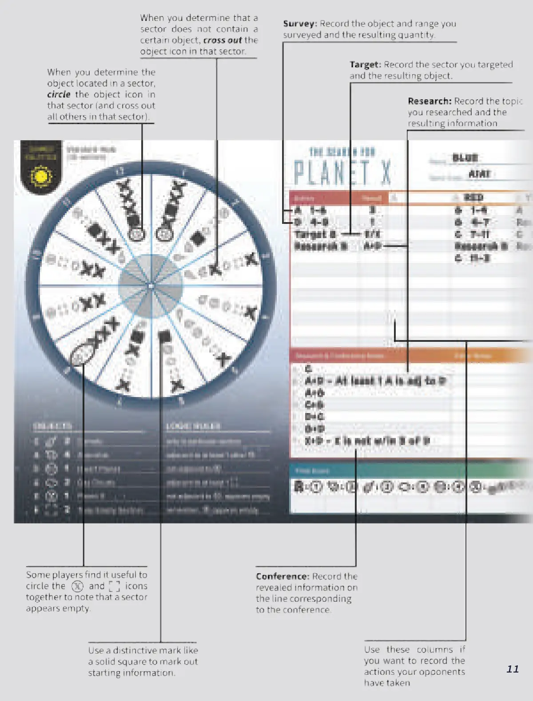
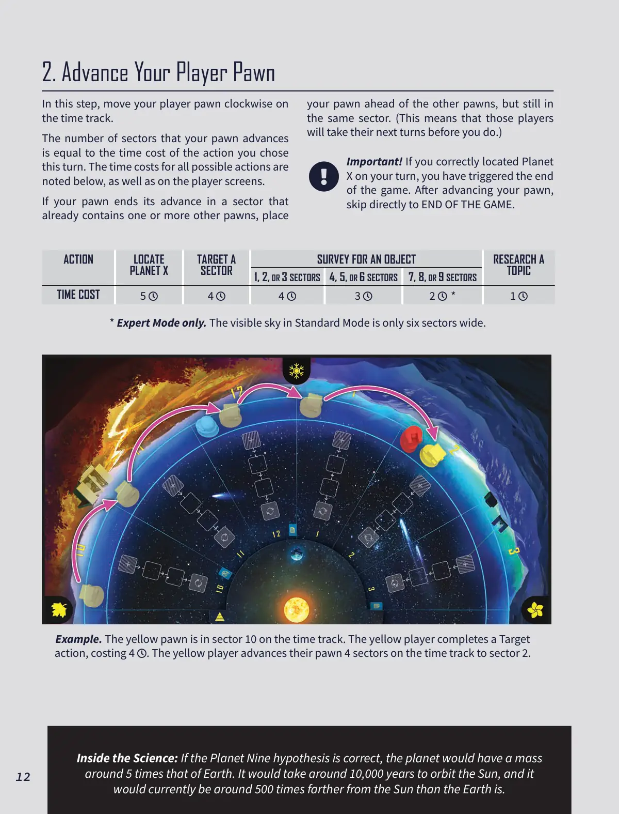
📝 第 12 页 AI 机翻对照（点击展开）
2. 前进你的玩家棋子
在此步骤中，将你的玩家棋子在时间轨道上顺时针前进。
你的棋子前进的扇区数量等于你本回合选择的行动的时间成本。所有可能行动的时间成本在下方和玩家屏幕上都有注明。
如果你的棋子前进结束时停在已经包含一个或多个其他棋子的扇区中，将你的棋子放在其他棋子前面，但仍留在同一扇区内。（这意味着那些玩家将在你之前进行他们的下一个回合。）
重要！如果你在你的回合中正确找到了X行星，你已经触发了游戏结束。在前进你的棋子后，直接跳转到游戏结束部分。
行动
定位
X行星
瞄准一个
扇区
探测一个天体
研究一个
主题
1、2或3个扇区 4、5或6个扇区
7、8或9个扇区
时间成本
5
4
4
3
2 *
1
- 仅专家模式。标准模式的可见天空只有六个扇区宽。
示例。黄色棋子在时间轨道的扇区10上。黄色玩家完成了一个瞄准行动，成本为4 。黄色玩家将他们的棋子在时间轨道上前进4个扇区到扇区2。
科学内幕：如果第九行星假说是正确的，该行星的质量将是地球的约5倍。它绕太阳公转需要约10,000年，并且目前距离太阳的距离是地球的约500倍。
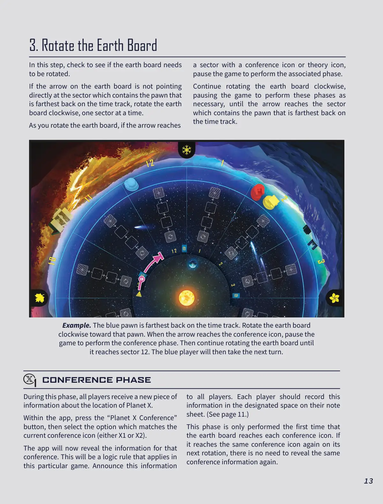
📝 第 13 页 AI 机翻对照（点击展开）
3. 旋转地球版图
在此步骤中，检查地球版图是否需要旋转。
如果地球版图上的箭头没有直接指向包含时间轨道上最靠后棋子的扇区，则顺时针旋转地球版图，一次旋转一个扇区。
当你旋转地球版图时，如果箭头到达带有会议图标或理论图标的扇区，暂停游戏以执行相关阶段。
继续顺时针旋转地球版图，根据需要暂停游戏以执行这些阶段，直到箭头到达包含时间轨道上最靠后棋子的扇区。
会议阶段
在此阶段，所有玩家都会收到关于X星球位置的新信息。
在应用中，按下"X星球会议"按钮，然后选择与当前会议图标匹配的选项（X1或X2）。
应用现在将揭示该会议的信息。这将是一个适用于此特定游戏的逻辑规则。向所有玩家宣布此信息。每位玩家应将其记录在他们的记录表的指定空间中。（参见第11页。）
此阶段仅在地球版图首次到达每个会议图标时执行。如果它在下一次旋转中再次到达相同的会议图标，则无需再次揭示相同的会议信息。
示例。蓝色棋子在时间轨道上最靠后。顺时针旋转地球版图朝向该棋子。当箭头到达会议图标时，暂停游戏以执行会议阶段。然后继续旋转地球版图直到它到达扇区12。蓝色玩家将进行下一个回合。
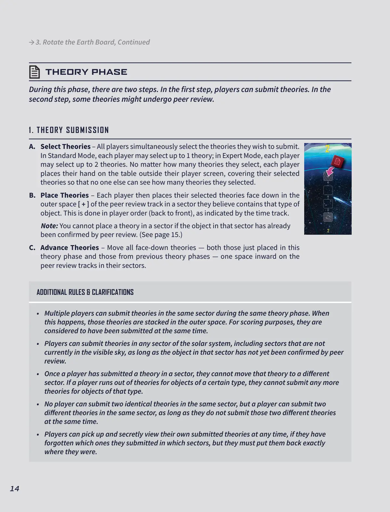
📝 第 14 页 AI 机翻对照（点击展开）
3. 旋转地球版图，续
理论阶段
在此阶段，有两个步骤。在第一个步骤中，玩家可以提交理论。在第二个步骤中，一些理论可能会进行同行评审。
1. 理论提交
A. 选择理论 - 所有玩家同时选择他们希望提交的理论。在标准模式下，每位玩家最多可选择1个理论；在专家模式下，每位玩家最多可选择2个理论。无论他们选择多少个理论，每位玩家都将手放在玩家屏幕外的桌子上，覆盖他们选择的理论，这样其他人就无法看到他们选择了多少个理论。
B. 放置理论 - 然后，每位玩家将他们选择的理论面朝下放置在同行评审轨道的外太空[+]中，放置在他们认为包含该类型物体的扇区内。这是按玩家顺序（从后到前）进行的，如时间轨道所示。
注意：如果该扇区中的物体已被同行评审确认，则不能在该扇区放置理论。（参见第15页。）
C. 推进理论 - 将所有面朝下的理论——包括在本理论阶段刚刚放置的理论以及之前理论阶段的理论——在其扇区的同行评审轨道上向内移动一格。
额外规则与说明
• 在同一理论阶段，多位玩家可以在同一扇区内提交理论。当这种情况发生时，这些理论会被堆叠在外太空。为了计分目的，它们被认为是在同一时间提交的。
• 玩家可以在太阳系的任何扇区内提交理论，包括当前不在可见天空中的扇区，只要该扇区中的物体尚未被同行评审确认。
• 一旦玩家在某个扇区内提交了一个理论，他们就不能将该理论移动到不同的扇区。如果玩家用完了某种类型物体的理论，他们就不能再提交该类型物体的任何理论。
• 没有玩家可以在同一扇区内提交两个相同的理论，但玩家可以在同一扇区内提交两个不同的理论，只要他们不同时提交这两个不同的理论。
• 如果玩家忘记了他们在哪个扇区内提交了哪些理论，他们可以在任何时候拿起并秘密查看自己提交的理论，但他们必须将它们放回原处。
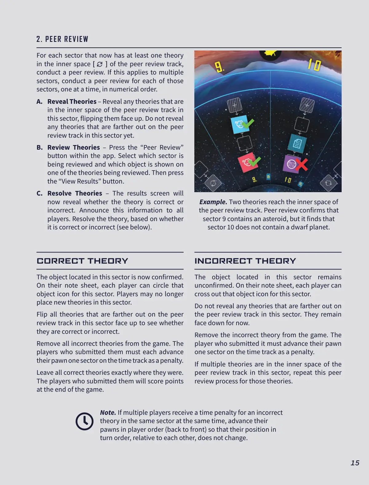
📝 第 15 页 AI 机翻对照（点击展开）
2. 同行评议
对于现在同行评议轨道内空间 [ ] 中至少有一个理论的每个领域，进行一次同行评议。如果这适用于多个领域，则按数字顺序依次对每个领域进行一次同行评议。
A. 揭示理论 - 揭示该领域同行评议轨道内空间中的任何理论，将它们正面朝上翻转。不要揭示该领域同行评议轨道上更外侧的任何理论。
B. 审查理论 - 在应用程序中按下"同行评议"按钮。选择正在审查的领域以及其中一个被审查理论上的物体。然后按下"查看结果"按钮。
C. 解决理论 - 结果屏幕现在将揭示该理论是否正确。向所有玩家宣布此信息。根据理论是否正确来解决该理论（见下文）。
正确理论
位于该领域的物体现已得到确认。在他们的记录表上，每个玩家可以圈出该领域的物体图标。玩家不能再在该领域放置新理论。
将该领域同行评议轨道上更外侧的所有理论正面朝上翻转，以查看它们是否正确。
从游戏中移除所有错误理论。提交这些理论的玩家必须各自将他们的棋子在时间轨道上前进一个领域作为惩罚。
将所有正确理论保留在原位。提交这些理论的玩家将在游戏结束时获得分数。
错误理论
位于该领域的物体仍未得到确认。在他们的记录表上，每个玩家可以划掉该领域的物体图标。
不要揭示该领域同行评议轨道上更外侧的任何理论。它们目前保持正面朝下。
从游戏中移除错误理论。提交该理论的玩家必须将他们的棋子在时间轨道上前进一个领域作为惩罚。
如果该领域同行评议轨道的内空间中有多个理论，对这些理论重复此同行评议过程。
注意。如果多个玩家在同一时间因同一领域的错误理论而受到时间惩罚，按玩家顺序（从后到前）前进他们的棋子，以使他们相对于彼此的回合顺序位置保持不变。
示例。两个理论到达同行评议轨道的内空间。同行评议确认第9领域包含一颗小行星，但发现第10领域不包含矮行星。
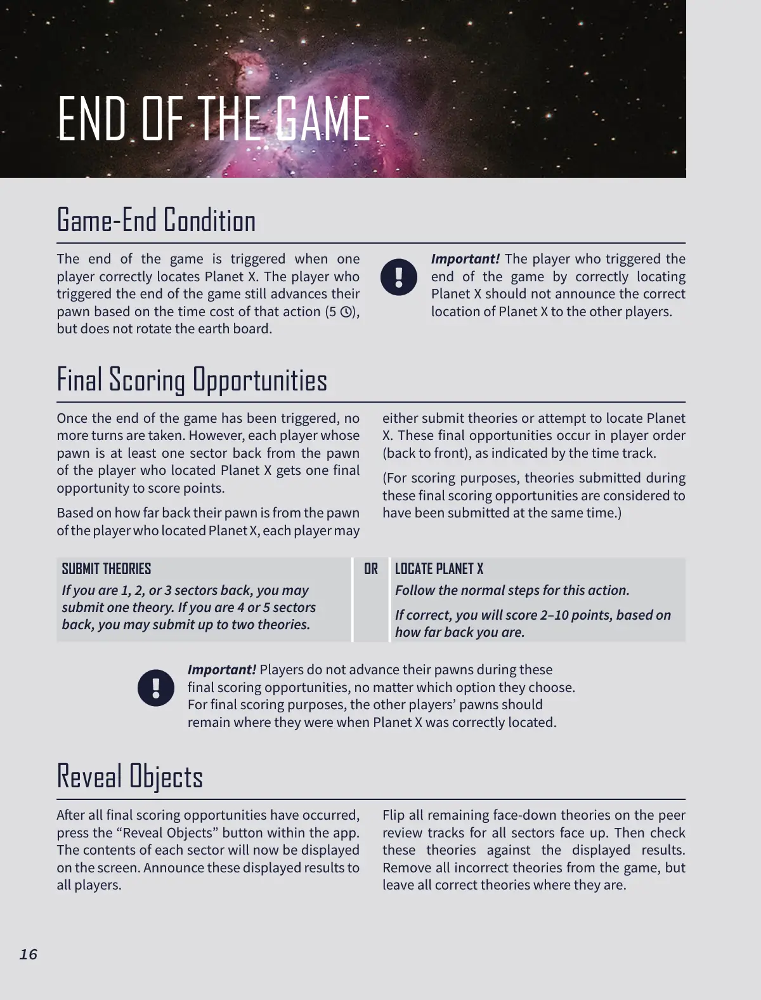
📝 第 16 页 AI 机翻对照（点击展开）
游戏结束条件
当有玩家正确找到行星X时，游戏结束。触发游戏结束的玩家仍需根据该行动的时间成本（5）前进其棋子，但不旋转地球板块。
重要！通过正确找到行星X触发游戏结束的玩家不应向其他玩家宣布行星X的正确位置。
最终得分机会
一旦游戏结束被触发，不再进行回合。然而，其棋子位于找到行星X的玩家的棋子至少一个扇区后的每位玩家，将获得一次最终得分机会。
根据其棋子与找到行星X的玩家的棋子之间的距离，每位玩家可以提交理论或尝试找到行星X。这些最终机会按玩家顺序（从后到前）进行，如时间轨道所示。
（为计分目的，在这些最终得分机会期间提交的理论被视为在同一时间提交。）
提交理论
如果你落后1、2或3个扇区，你可以提交一个理论。如果你落后4或5个扇区，你可以提交最多两个理论。
或者
找到行星X
遵循此行动的正常步骤。
如果正确，你将根据你落后的距离获得2-10分。
重要！无论选择哪个选项，玩家在这些最终得分机会期间都不前进其棋子。
为最终计分目的，其他玩家的棋子应保持在行星X被正确找到时的位置。
揭示物体
在所有最终得分机会完成后，点击应用内的"揭示物体"按钮。
每个扇区的内容现在将显示在屏幕上。向所有玩家宣布这些显示的结果。
将所有扇区同行评审轨道上所有剩余的正面朝下的理论翻转为正面朝上。然后将这些理论与显示的结果进行核对。
从游戏中移除所有错误的理论，但将所有正确的理论保留在原处。
游戏结束
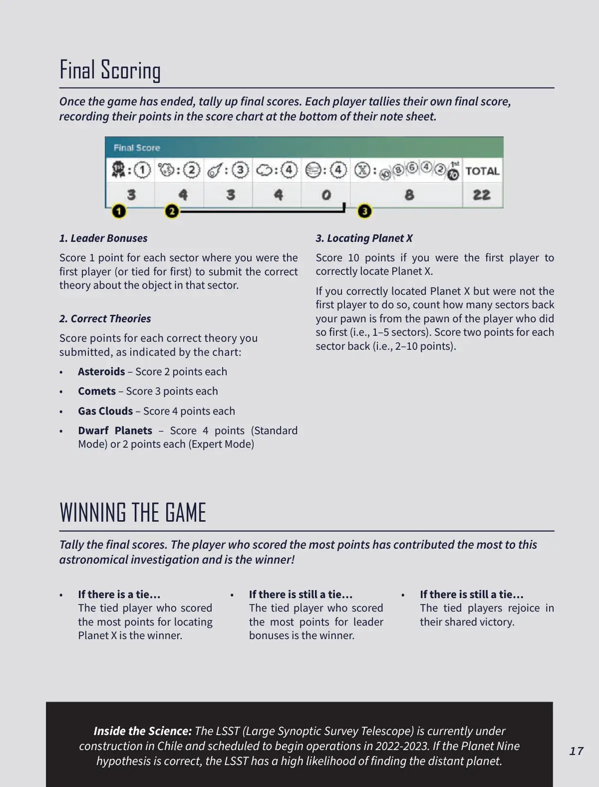
📝 第 17 页 AI 机翻对照（点击展开）
最终计分
游戏结束后，计算最终得分。每位玩家计算自己的最终得分，
并在记分表底部的记分表中记录自己的分数。
1. 领先奖励
在每个你提交了该天体正确理论且是第一个（或并列第一）的领域，
获得1分。
2. 正确理论
根据下表为你提交的每个正确理论计分：
•
小行星 – 每个2分
•
彗星 – 每个3分
•
气体云 – 每个4分
•
矮行星 – 标准4分（标准模式）或每个2分（专家模式）
3. 定位行星X
如果你是第一个正确找到行星X的玩家，获得10分。
如果你正确找到了行星X但不是第一个这样做的玩家，计算你的棋子与第一个这样做的玩家的棋子之间相隔多少个领域（即1-5个领域）。每个领域间隔得2分（即2-10分）。
赢得游戏
计算最终得分。得分最高的玩家为这次天文调查做出了最大贡献，是获胜者！
•
如果平局…
在定位行星X上得分最多的平局玩家是获胜者。
•
如果仍然平局…
在领先奖励上得分最多的平局玩家是获胜者。
•
如果仍然平局…
平局玩家共享胜利的喜悦。
科学内幕：LSST（大型综合巡天望远镜）目前正在智利建设中，计划于2022-2023年开始运营。如果行星九假说是正确的，LSST有很大可能找到这颗遥远的行星。
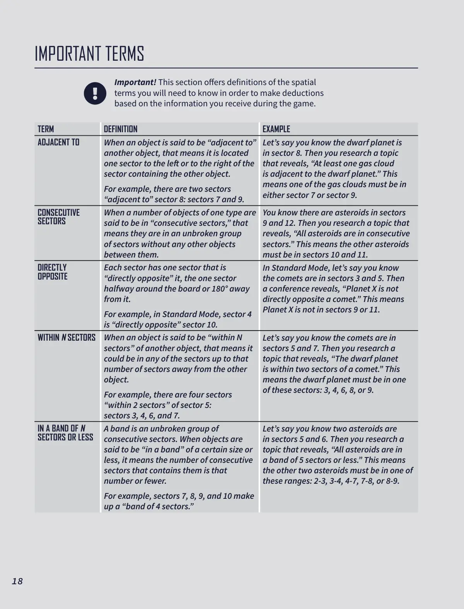
📝 第 18 页 AI 机翻对照（点击展开）
重要术语
重要！本节提供了您在游戏中根据接收到的信息进行推理所需了解的空间术语定义。
术语
定义
示例
相邻
当一个物体被描述为"与另一个物体相邻"时，意味着它位于包含另一个物体的区域的左侧或右侧的一个区域。
例如，有两个区域"与"区域8相邻：区域7和区域9。
假设您知道矮行星在区域8。然后您研究一个主题，揭示道："至少有一个气体云与矮行星相邻。"这意味着一个气体云必须在区域7或区域9中。
连续
区域
当一个类型的多个物体被描述为在"连续区域"中时，意味着它们在一个不间断的区域组中，它们之间没有任何其他物体。
您知道小行星在区域9和12。然后您研究一个主题，揭示道："所有小行星都在连续区域中。"这意味着其他小行星必须在区域10和11中。
正对
相反
每个区域都有一个"正对相反"的区域，即版图上相隔一半或相距180°的那个区域。
例如，在标准模式下，区域4"正对相反"区域10。
在标准模式下，假设您知道彗星在区域3和5。然后一次会议揭示："行星X不与彗星正对相反。"这意味着行星X不在区域9或11中。
在N个区域内
当一个物体被描述为"在N个区域内"另一个物体时，意味着它可能在距离另一个物体最多N个区域的任何区域中。
例如，有四个区域"在2个区域内"区域5：区域3、4、6和7。
假设您知道彗星在区域5和7。然后您研究一个主题，揭示道："矮行星在一个彗星的两个区域内。"这意味着矮行星必须在这些区域之一中：3、4、6、8或9。
在N个区域
或更少的带内
带是一个不间断的连续区域组。当物体被描述为在特定大小或更少的"带"中时，意味着包含它们的连续区域数量是该数量或更少。
例如，区域7、8、9和10组成一个"4个区域的带"。
假设您知道两个小行星在区域5和6。然后您研究一个主题，揭示道："所有小行星都在5个区域或更少的带中。"这意味着另外两个小行星必须在这些范围之一中：2-3、3-4、4-7、7-8或8-9。
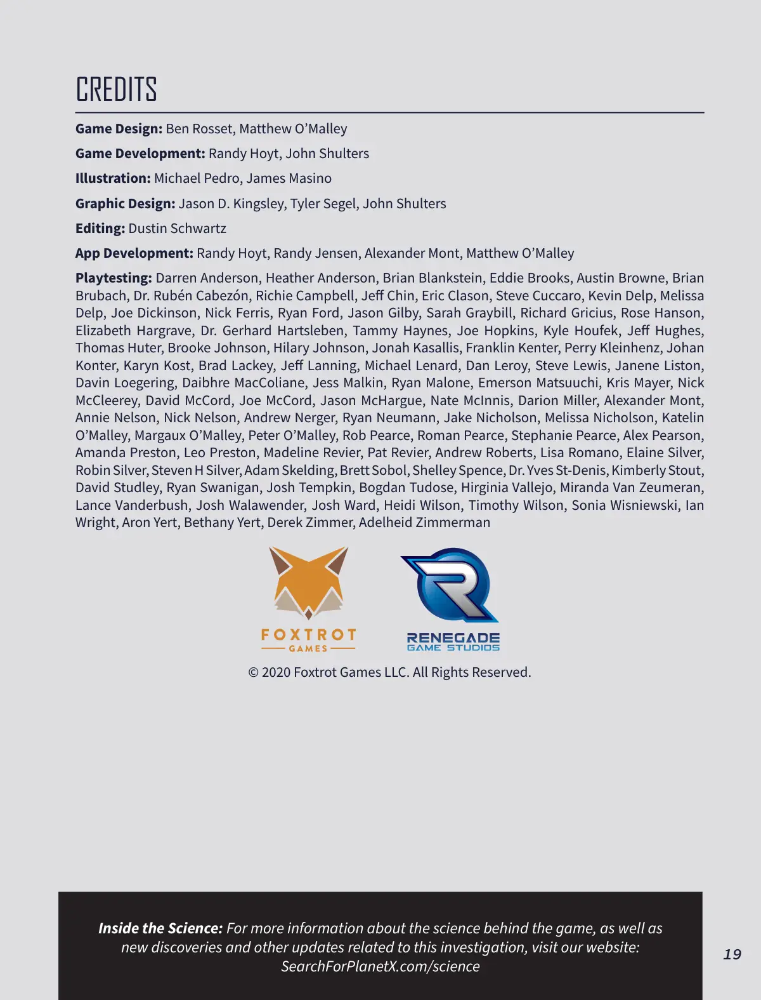
📝 第 19 页 AI 机翻对照（点击展开）
制作人员
游戏设计：Ben Rosset, Matthew O'Malley
游戏开发：Randy Hoyt, John Shulters
插画：Michael Pedro, James Masino
平面设计：Jason D. Kingsley, Tyler Segel, John Shulters
编辑：Dustin Schwartz
应用开发：Randy Hoyt, Randy Jensen, Alexander Mont, Matthew O'Malley
测试游戏：Darren Anderson, Heather Anderson, Brian Blankstein, Eddie Brooks, Austin Browne, Brian Brubach, Dr. Rubén Cabezón, Richie Campbell, Jeff Chin, Eric Clason, Steve Cuccaro, Kevin Delp, Melissa Delp, Joe Dickinson, Nick Ferris, Ryan Ford, Jason Gilby, Sarah Graybill, Richard Gricius, Rose Hanson, Elizabeth Hargrave, Dr. Gerhard Hartsleben, Tammy Haynes, Joe Hopkins, Kyle Houfek, Jeff Hughes, Thomas Huter, Brooke Johnson, Hilary Johnson, Jonah Kasallis, Franklin Kenter, Perry Kleinhenz, Johan Konter, Karyn Kost, Brad Lackey, Jeff Lanning, Michael Lenard, Dan Leroy, Steve Lewis, Janene Liston, Davin Loegering, Daibhre MacColiane, Jess Malkin, Ryan Malone, Emerson Matsuuchi, Kris Mayer, Nick McCleerey, David McCord, Joe McCord, Jason McHargue, Nate McInnis, Darion Miller, Alexander Mont, Annie Nelson, Nick Nelson, Andrew Nerger, Ryan Neumann, Jake Nicholson, Melissa Nicholson, Katelin O'Malley, Margaux O'Malley, Peter O'Malley, Rob Pearce, Roman Pearce, Stephanie Pearce, Alex Pearson, Amanda Preston, Leo Preston, Madeline Revier, Pat Revier, Andrew Roberts, Lisa Romano, Elaine Silver, Robin Silver, Steven H Silver, Adam Skelding, Brett Sobol, Shelley Spence, Dr. Yves St-Denis, Kimberly Stout, David Studley, Ryan Swanigan, Josh Tempkin, Bogdan Tudose, Hirginia Vallejo, Miranda Van Zeumeran, Lance Vanderbush, Josh Walawender, Josh Ward, Heidi Wilson, Timothy Wilson, Sonia Wisniewski, Ian Wright, Aron Yert, Bethany Yert, Derek Zimmer, Adelheid Zimmerman
© 2020 Foxtrot Games LLC. 保留所有权利。
科学内幕：欲了解更多关于游戏背后的科学知识，以及与此调查相关的新发现和其他更新，请访问我们的网站：
SearchForPlanetX.com/science
<!--page:20>
在我们太阳系的边缘，可能潜伏着一颗黑暗的行星。
自本世纪初以来，天文学家一直在发现遥远的天体并追踪它们的轨道，
以更好地了解太阳系。一些人认为证据指向了一颗遥远、未被发现的行星的存在。
你有找到行星X的必要条件吗？
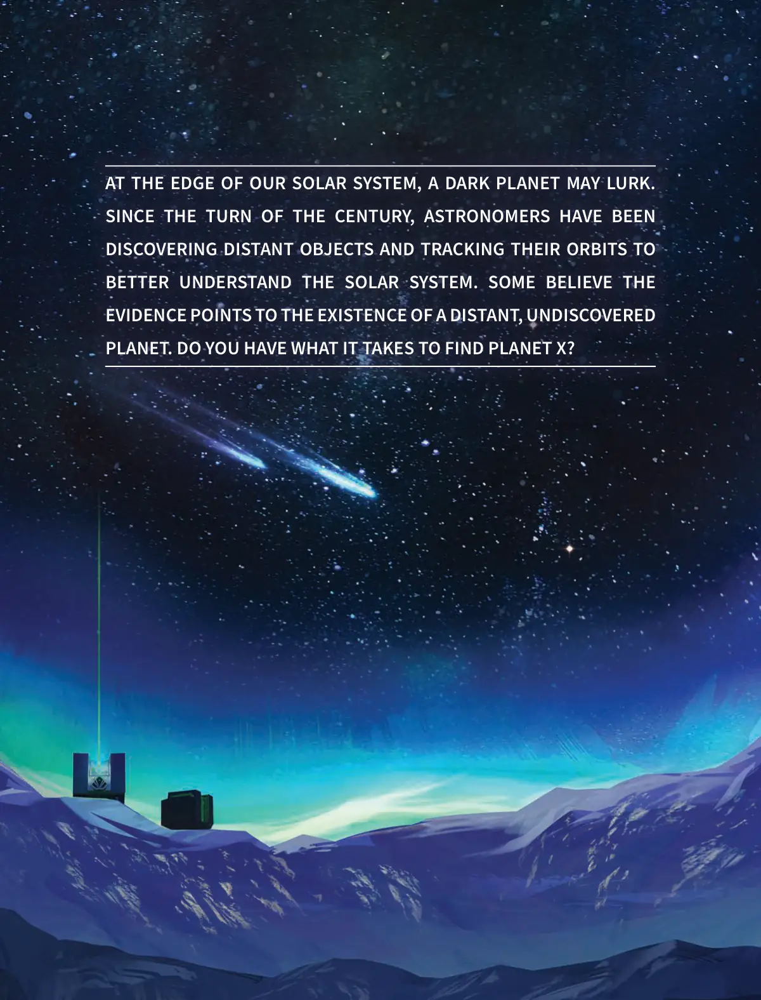